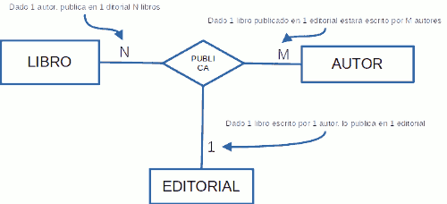
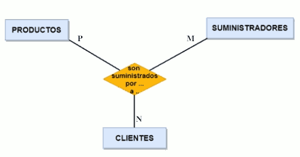

Una relación ternaria es una asociación de tres entidades. Frecuentemente, la relación ternaria la utilizaremos cuando entre tres entidades existen relaciones binarias N:N (muchos a muchos) entre ellas. Si entre ellas existe alguna relación 1:N (uno a muchos) o 1:1 (uno a uno), entonces la relación ternaria no tiene mucho sentido.
La forma de hallar cardinalidades en las relaciones ternarias es fijar una combinación de elementos en dos de los extremos de la relación y obtener lógicamente las cardinalidades mínima y máxima en el otro extremo libre. Explicado de otra manera, en una relación ternaria se relacionan dos de las entidades (en términos de unidad) con respecto a la otra entidad.
Ejemplo: las entidades libro, autor y editorial se relacionan las tres mediante la acción de publicar el libro (en un año concreto, con un ISBN y con un determinado número de páginas en la edición).
Para determinar las cardinalidades hay que preguntarse por:
- ¿Cuántos autores puede tener un determinado libro publicado en una determinada editorial(cardinalidad en el extremo de la entidad autor), expresado de otra forma: Dado un libro de una editorial, ¿Cuántos autores lo han publicado?
- Cuántos libros puede tener un determinado autor publicados en una determinada editorial (cardinalidad en el extremo de la entidad libro), expresado de otra forma totalmente equivalente a la anterior: Un autor que colabora con una editorial, ¿Cuántos libros tiene publicados?
- En cuántas editoriales puede un determinado autor publicar un mismo libro (cardinalidad en el extremo de la entidad editorial). Expresado de una forma diferente pero equivalente podríamos decir: Un autor que ha escrito un libro, ¿En cuántas editoriales lo tiene publicado?
Estas relaciones se dan cuando nos interesa conocer la concurrencia de las tres en un mismo momento. Interesa conocer la cardinalidad máxima en cada una de las tres ramas de la relación. Pueden ser: (1, 1, 1), (1, 1, N), (1, N, N) o (N, N, N). No importa la posición donde se encuentra la cardinalidad N, es decir, es lo mismo (N, 1, 1) que (1, N, 1) o que (1, 1, N).
|
 |
Ejemplos de cardinalidades: